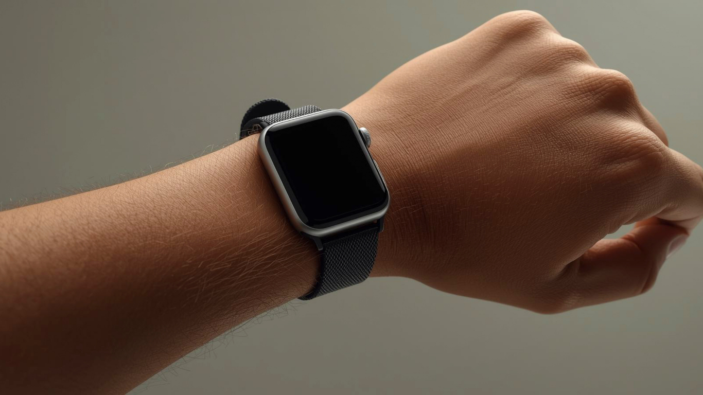

Resting Heart Rate
Your baseline heart rate at rest. A key indicator of cardiovascular fitness and overall recovery. Lower values generally indicate better fitness.

Average Heart Rate
Mean heart rate across the day, segmented by work hours and rest. Shows overall cardiovascular load during different activities.

Heart Rate During Tasks
Real-time heart rate mapped to calendar events. Reveals which meetings and tasks create the most cardiovascular demand.
Heart Rate Recovery
How quickly your heart rate returns to baseline after stressful periods. Faster recovery suggests better autonomic regulation.
Stress Score
Garmin's proprietary stress measurement derived from heart rate variability analysis. Scored 0–100, with lower values indicating less physiological stress.
High-Stress Minutes
Total daily minutes spent in elevated stress zones. Tracked across work hours to identify peak-stress periods and patterns.

Stress by Activity Type
Average stress levels broken down by meeting type, deep work, breaks, and commute. Shows which work activities drive the most stress.
Stress Distribution
Daily stress pattern visualization showing the balance between rest, low, medium, and high stress states throughout the day.
Morning Charge
Your Body Battery level at the start of the day. Higher morning values indicate better overnight recovery and readiness for the day.
End-of-Day Level
Where your energy reserves stand at the end of the workday. Consistently low values may indicate insufficient recovery or excessive demand.
Drain Rate
How quickly your Body Battery depletes during work hours. Linked to meeting density, stress intensity, and activity patterns.
Recharge Overnight
The amount of energy your body recovers during sleep. Influenced by sleep quality, evening routines, and overall stress load.
Sleep Score
Garmin's composite sleep quality metric combining duration, stages, and restfulness. A holistic view of how restorative your sleep is.
Deep Sleep
Time spent in deep sleep stages, critical for physical recovery and immune function. Typically 1–2 hours per night in healthy adults.
REM Sleep
Rapid Eye Movement sleep is essential for cognitive processing, memory consolidation, and emotional regulation.
Sleep Timing
When you fall asleep and wake up. Consistency in sleep timing is linked to better circadian rhythm alignment and daytime performance.
Overnight HRV
Heart Rate Variability measured during sleep provides the most reliable baseline. Higher HRV generally indicates better autonomic balance and recovery.
HRV Trend
Your HRV trajectory over the measurement period. Declining trends may signal accumulated stress or insufficient recovery.
HRV vs. Workload
How your HRV responds to variations in work intensity, meeting load, and recovery time. Reveals your body's capacity to handle demand.
Resting Respiration Rate
Breaths per minute at rest. Normal range is 12–20 brpm. Elevated resting respiration can indicate stress, illness, or poor recovery.
Respiration During Work
How your breathing rate changes during different work activities. Elevated rates during meetings may indicate cognitive or emotional stress.
Respiration Patterns
Daily breathing rhythm analysis showing transitions between calm and elevated states, correlated with work schedule and activity type.
Daily Steps
Total step count as a basic indicator of physical activity and movement throughout the day.

Active Minutes
Minutes of moderate to vigorous physical activity. WHO recommends at least 150 minutes of moderate activity per week.

Intensity Minutes
Garmin's measure of time spent at elevated heart rate zones, combining moderate and vigorous activity for a complete picture.
Stress per Meeting Type
Average physiological stress levels broken down by meeting category — team calls, client presentations, 1-on-1s, and deep work blocks.
Energy Before & After Tasks
Body Battery delta for each calendar event. Shows which activities drain energy and which ones are neutral or restorative.
Work vs. Non-Work Patterns
Comparison of health metrics during work hours versus evenings and weekends. Reveals whether you're achieving adequate recovery between workdays.